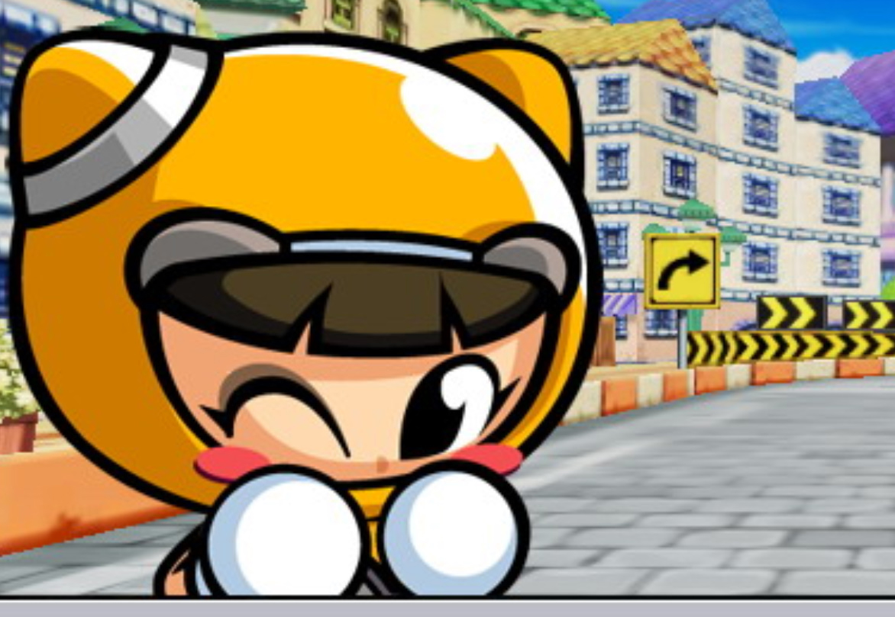
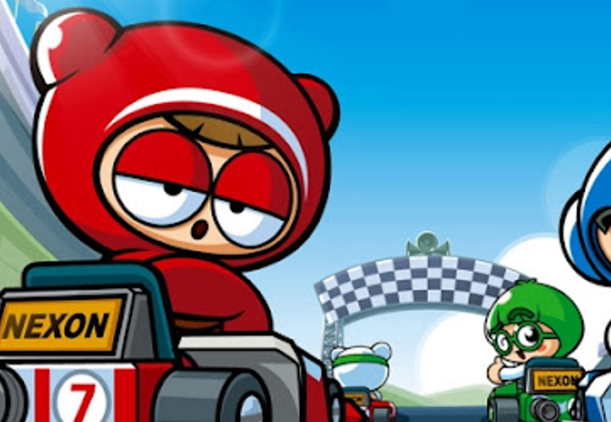
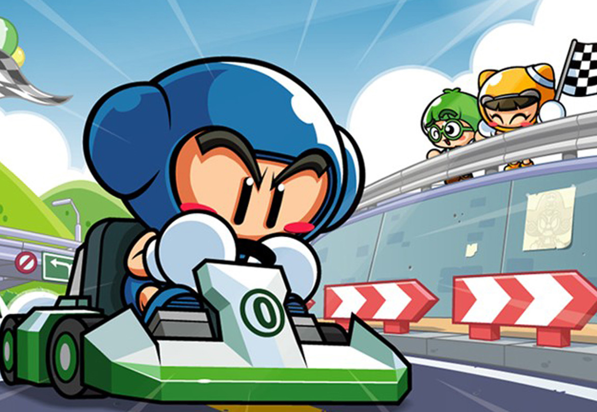

痞子妹
十分害羞的女孩，對卡丁車有著某種恐懼感。但自從藍寶取得駕駛執照後，她也付出了心血來努力提高駕駛技術，並且也達到了相當不錯的水準。現在的首要目標是跟她的男朋友藍寶一起去尋找惡棍海盜船長。在漂亮乖巧的外表底下，有時也會表現出果敢的駕駛技術。

睏寶
凡事簡單思考的個性和天生的樂天主義使他對速度沒有絲毫的恐懼感。由於他的駕駛技術是在偷看藍寶駕駛卡丁車之後自己琢磨出來的，所以有時並不會按正統的方法駕駛，而是想怎麼開就怎麼開。但是不管怎麼說，我們要相信他的發展前途是不可限量的！

藍寶
屬正統派的車手，富有正義感的性格使他非常討厭在比賽中使用不正當的陰險手段來贏的勝利。從小就時常駕駛爸爸的卡丁車訓練技街，在經驗上可說是非常豐富。加上常在又窄又彎的山道上駕駛，所以可以十分流暢的表現出漂移技術。
chevron_right
chevron_left
remove_red_eye
remove_red_eye
remove_red_eye
arrow_right_alt
arrow_right_alt